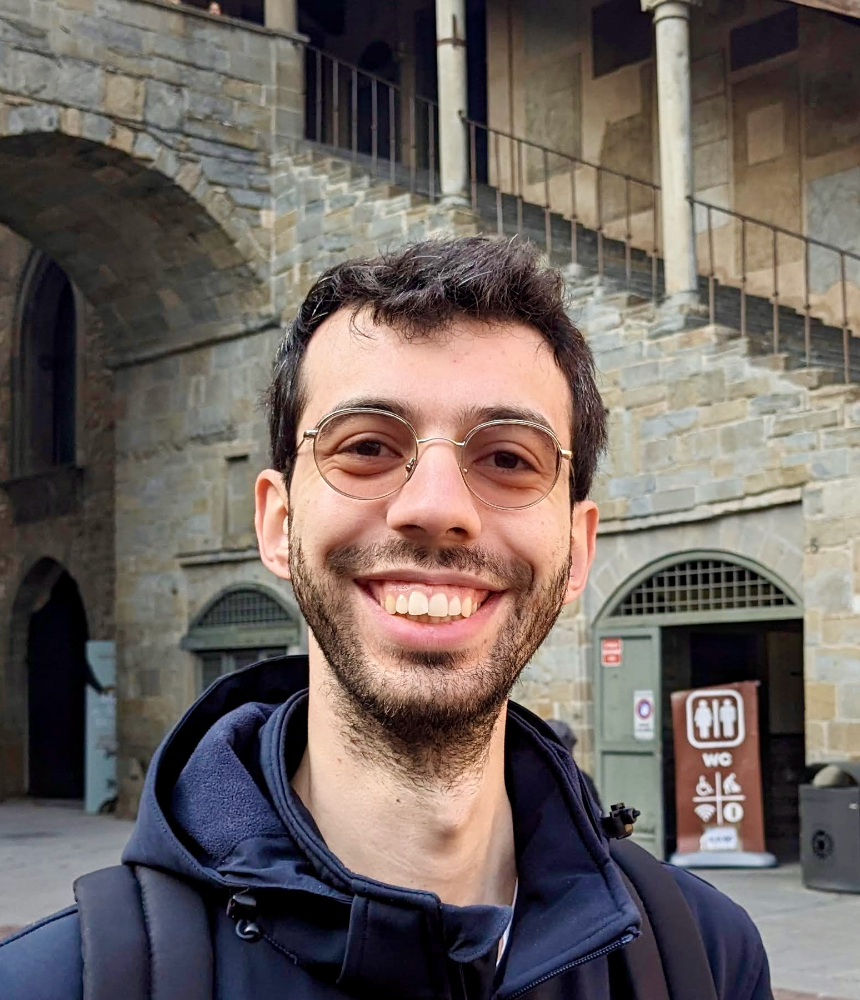
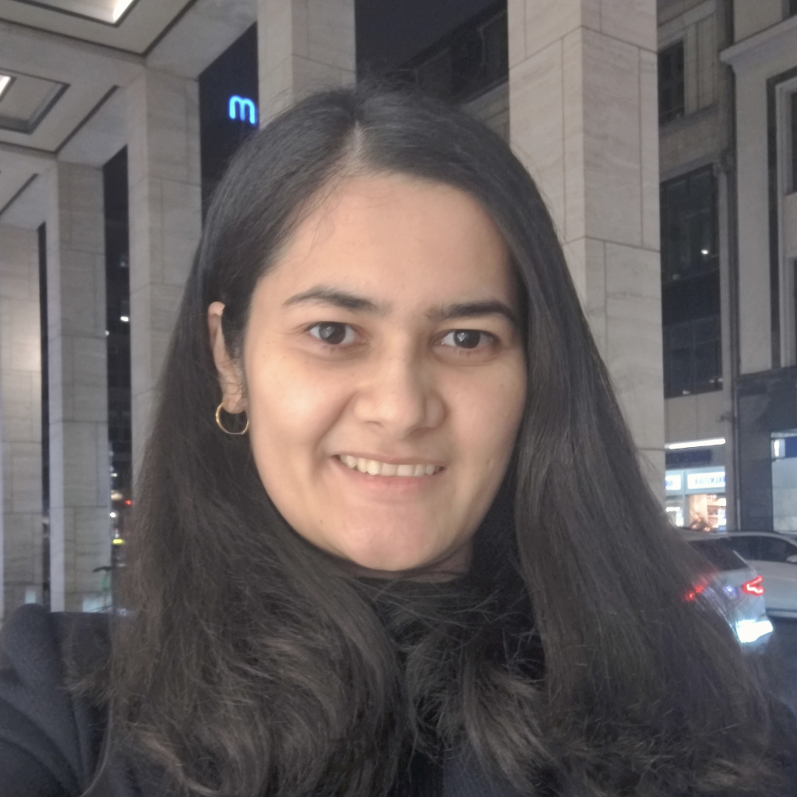
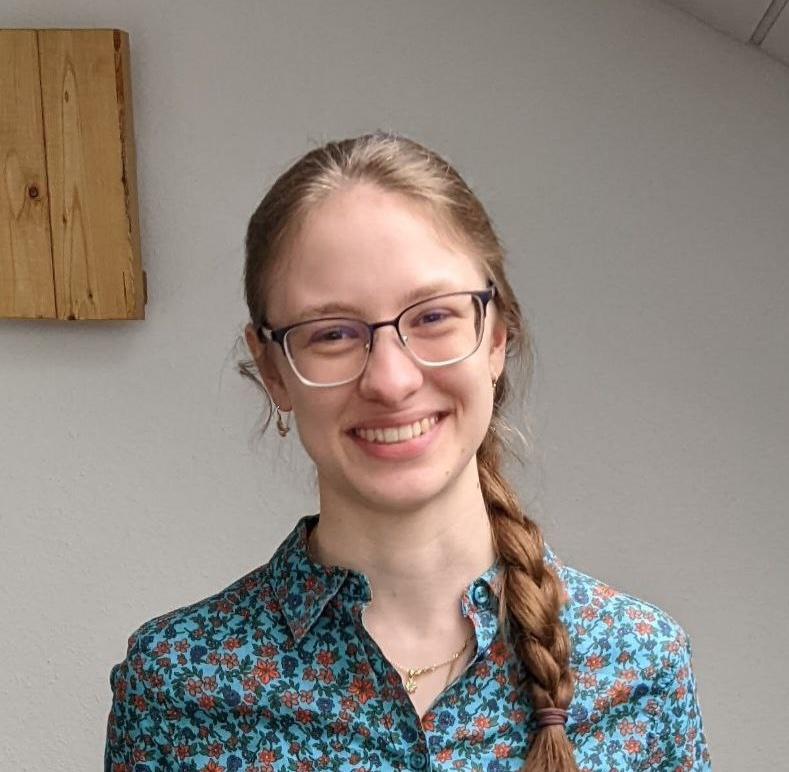
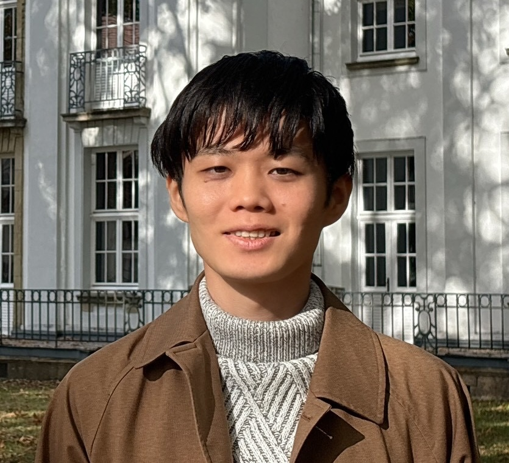
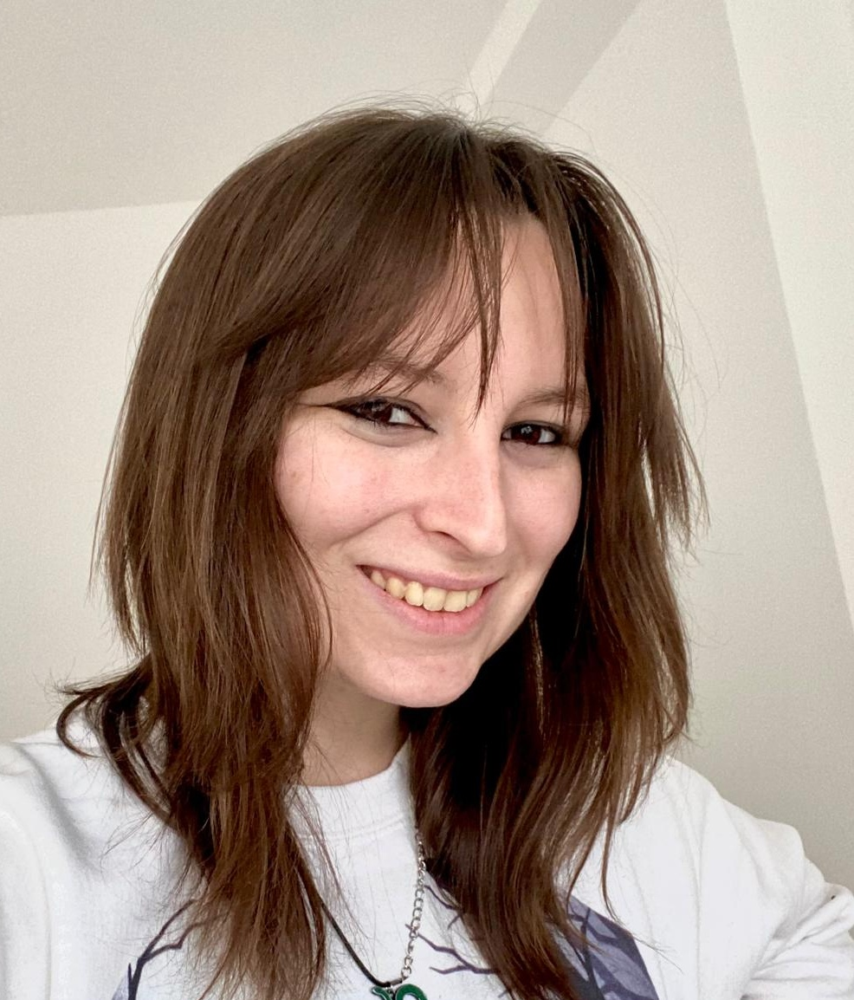
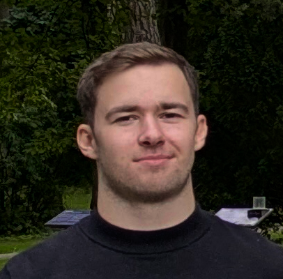
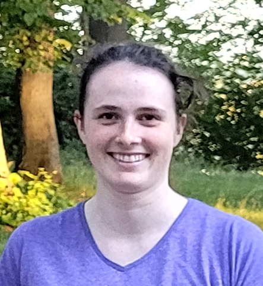
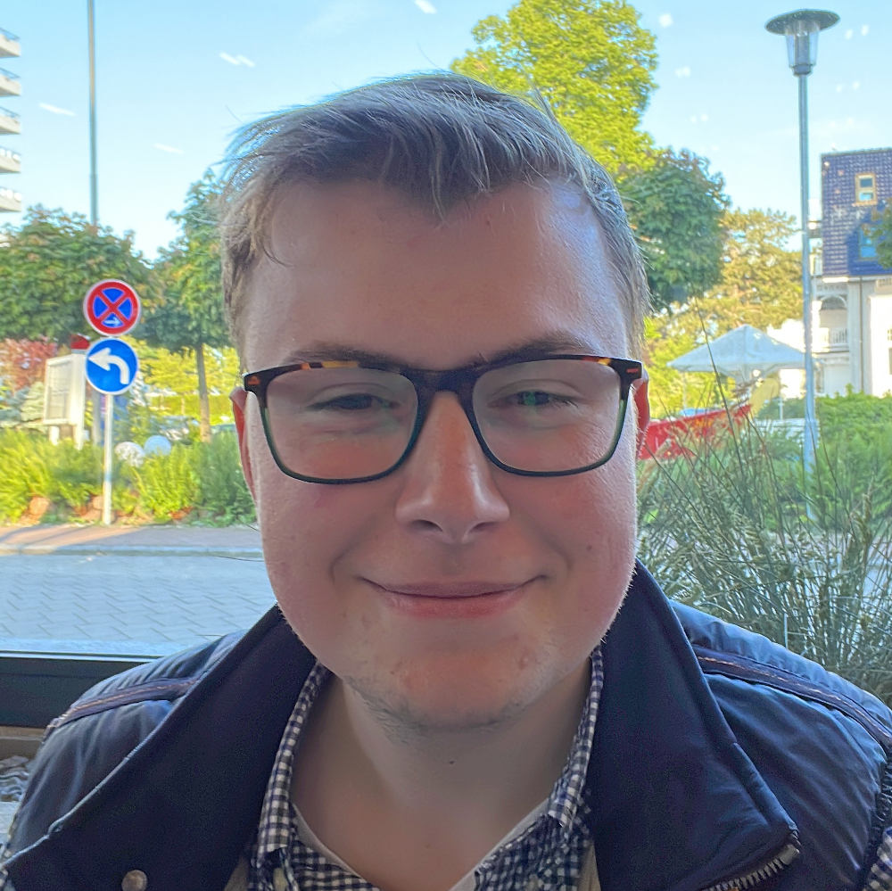

Research group at Hamburg Observatory
Emmy Noether Research Group
I am building a new research group at Hamburg Observatory focused on the formation of structures in the early Universe, specifically we aim to understand the emergence of quasars - active growing supermassive black holes. In order to expand the quasar redshift frontier and build statistical samples at Cosmic Dawn, we are using wide-area surveys in concert with large ground-based and space-borne observatories to conduct spectroscopic identification campaigns and multi-wavelength follow-up observations. The quasar selection strategies employ machine-learning methods on large astronomical data sets. Follow-up observations are reduced using state-of-the-art astronomical data reduction software and analysed using modern statistical inference techniques.
In this context group members use and are trained in the following skills to conduct their research:
- spectroscopic data reduction
- large-scale data analysis
- machine-learning methods
- robust statistical inference techniques
- software development (Python 3)
Positions
At this point I am offering no PhD or Postdoc position in my group.
Master thesis projects:
The next generation of QUEST - Measuring broad absorption lines in high-z quasars
Goal: The goal is to measure broad absorption line properties in distant quasars - rapdily accreting supermassive black holes – using QUEST, a generative machine learning model for quasar spectra we are developing in the group. To achieve this goal QUEST's capabilities to interpolate quasar spectra need to be significantly improved by overhauling its architecture and training it on a higher quality data set.
Description: The student will build upon our QUEST model, which was originally designed to generate synthetic quasar spectra, to enhance its capabilities in interpolating spectra. This application is central to many scientific applications, such as the measurement of broad absorption line properties (quasar winds) or measuring the impact of the neutral IGM on the Lya emission line. We envision to fully overhaul the architecture of the autoencoder (new encoder model, experimenting with new activation functions, et.c). A new training data set with higher quality spectra (e.g. from DESI) will be built to train the new model.
Required skills: Advanced Python programming (analysis, visualization)
Helpful skills: Machine learning (Variational Auto Encoders)
Supervisor(s): Dr. Francesco Guarneri & Dr. Jan-Torge Schindler
Group members
| Dr. Jan-Torge Schindler (Group leader) | ||
 |
Dr. Francesco Guarneri (Postdoctoral Researcher) Francesco is leading the high redshift quasar search efforts with Euclid mission data. He is using machine learning models (e.g., XGBoost) to select quasar candidates in Euclid data. The training set for the selection is built from synthethic quasar spectra, that were generated using a generative machine learning model (Variational Auto Encoder) we are developing in the group. |
|
| Laura Natalia Martínez Ramírez (Postdoctoral Researcher) Laura has been leading campaigns to identify high-redshift quasars using semi-supervised machine learning techniques. Within the group she is exploring contrastive learning methods to identify quasars missed by our standard supervised selection strategies. |
||
 |
Radha Gharapurkar (Ph.D. student) Radha's current work focuses on the demographics of luminous quasars at redshifts z~3.5 to z~6. Based on a large (58) sample of near-infrared spectroscopy of extremely luminous quasars, she is studying their physical properties (e.g., black hole mass, accretion rate) to derive the black hole mass function at z~3.5. Extending this work to z~6 will allow her to study the evolution of the quasar population over the first billion years of the Universe. |
|
 |
Katharina Jurk (Ph.D. student) Katharina's current project is embedded in the collaborative work around the JWST Treasury Program COSMOS-3D. She is working with JWST/NIRCam wide field slitless spectroscopy to provide a census of galaxies and faint active galactic nuclei at high redshift. The project aims to map the growth of galaxie and supermassive black holes in the early Universe. |
|
 |
Tatsuyuki Sekine (Ph.D. student) Tatsuyuki works at the intersection of machine learning and astronomy. He is developing and applying modern machine learning algorithms for a more unbiased quasar census in the Euclid Wide Survey. He is currently developing a multi-modal probabilistic autoencoder to select quasar candidates using anomaly scores. |
|
 |
Violet Moore (M.Sc. student) Violet is a Master of Physics student at Hamburg University. She is working on a project to identify quasars in the Euclid data using supervised machine learning techniques. She focuses on a redshift range of z~5.5 to z~6.5, to unveil luminous quasars that might have been missed previously. |
|
Former group members
 |
Arthur Lawrenz (M.Sc. student) Arthur's Masters project explored the use of self-supervised representation learning applied to 1D spectroscopic data. In this context he adapted the "Bootstrap Your Own Latent" (BYOL) algorithm. |
|
 |
Lea Trahmer (B.Sc. student) Lea's thesis project focused on the radio properties of extremely luminous quasars. She is investigated the shapes of the radio spectral energy distributions in a sample of 58 quasars at redshift z∼3.5 using data from different radio surveys (e.g., LOFAR, FIRST, VLASS). |
|
 |
Niklas Knop (B.Sc. student) In his Bachelor thesis Niklas looked for quasars with similar properties to J0100+2802, the most luminous quasar known at z∼6.3. He used the spectra of SDSS quasars to identify low-redshift analogues and evaluate claims of lensing magnification in the J0100+2802 spectrum. |
|